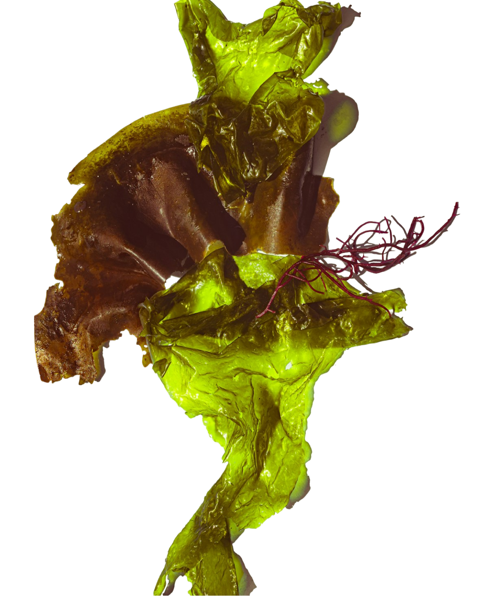
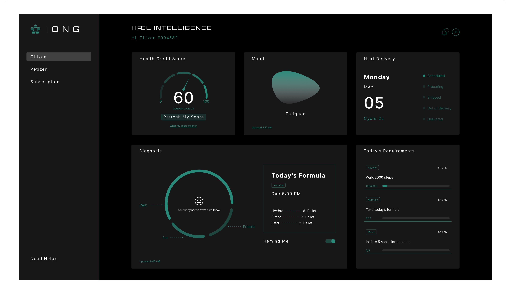

1
Sustainable Source
All substrates are derived from natural, organic, whole food sources and supplied through government-certified producers to ensure consistency and quality.

Trust and communication
All substrates are derived from natural, organic, whole food sources and supplied through government-certified producers to ensure consistency and quality.

All materials are processed and reformulated into standardized substrates - Hwǣte, Flǣsc, and Fǣtt - ensuring consistent and optimized daily nutritional intake.

Your body is continuously monitored through Med IoT, allowing the system to determine the most suitable nutritional profile for your current condition.

Your personalized allocation arrives once per 30-day cycle, providing exactly what your body needs.